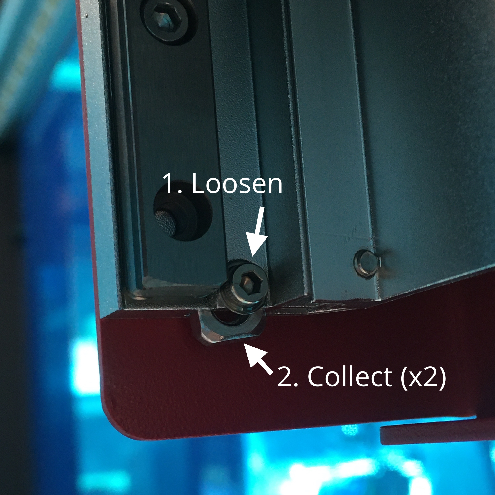
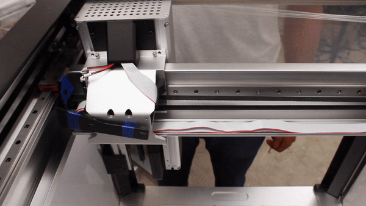

Desbloqueo.
Para evitar daños durante el transporte, los ejes del OT-2 están asegurados con 3 soportes de bloqueo. Podrá identificarlos fácilmente: cada tornillo y soporte está actualmente marcado con cinta azul.
Tenga en cuenta que los soportes de su robot pueden ser negros o rojos.
Estos soportes deben ser quitados antes de encender y hacer funcionar el robot. Todo el hardware necesario para quitarlos está incluido en su caja de accesorios.
Las instrucciones originales del fabricante puede encontrarlas en el siguiente enlace: https://support.opentrons.com/en/articles/2687521-get-started-unlock-the-ot-2
- Personal necesario
-
-
IN. Técnico de instalación.
-
- Herramientas/Material necesario
-
-
Llave Allen de 3 mm
-
Llave Allen de 2 mm
-
Destornillador de 2,5 mm incluido
-
- Operaciones/Pasos
| Paso | Herramientas | Detalle, Fotos y/o diagramas |
|---|---|---|
1. Gire el robot |
… |
Gire su robot para que las banderas azules de la cerradura sean más accesibles para usted |
2. Retire los tornillos que hay tras el carro de la pipeta. |
Llave Allen de 3 mm |
Los dos primeros tornillos que hay que quitar se encuentran detrás del carro de la pipeta. Se puede acceder a él a través de la puerta de apertura frontal.
|
3. Retire las tuercas |
Llave Allen de 2 mm |
Recoja las dos tuercas cuadradas que cayeron del carro de la pipeta. Si no se ha caído ninguna tuerca, es posible que estén atascadas. Use su llave Allen de 2 mm para aflojar momentáneamente el pequeño tornillo dentro de la caja de la pipeta, para que las tuercas tengan más espacio para deslizarse.  |
4. Retire los tres tornillos encima del carro de la pipeta |
Llave Allen de 3 mm |
El siguiente juego de tornillos se encuentra ligeramente por encima del carro de la pipeta. Hay 3 tornillos en total. Para poder acceder al tercer tornillo, primero se deben retirar los 2 tornillos que se muestran a continuación.
|
Retire el tercer tornillo de bloqueo |
… |
5. Mueva el carro z para permitir un mejor acceso al tercer tornillo de bloqueo Luego, desatornille el último tornillo de bloqueo para quitar el soporte.  |
6. Retire los dos tornillos del bloqueo inferior |
Llave Allen de 3 mm |
Ahora que el carro está fuera del camino, los dos tornillos para el soporte de bloqueo inferior son accesibles
|
7. Retire el último soporte |
Llave Allen de 3 mm |
El último soporte de bloqueo es el más pequeño y fácil de quitar. Usando tu llave Allen de 3 mm, quita el tornillo y el pequeño soporte de cierre en forma de L.
|
8. Ponga arandelas a los tornillos del panel superior |
… |
Abra la bolsa plástica con los tornillos del panel superior. Inserte una arandela y una junta tórica de goma en el tornillo, si no están preinsertados, como se indica en la imagen Repita el proceso para el resto de los tornillos.
|
9. Coloque el panel superior |
Destornillador de 2,5 mm |
Deslice la pieza del panel en la parte superior del robot e inserte los 4 tornillos en las 4 esquinas. Asegure en su lugar con el destornillador de 2,5 mm.
|
10. Inserte los paneles laterales en el interior del robot |
Destornillador de 2,5 mm |
Inserte los paneles laterales en el interior del robot para cubrir las aberturas inferiores de las ventanas izquierda y derecha |


| Notas |
|---|
Escriba en este espacio las notas e incidencias del proceso
. |